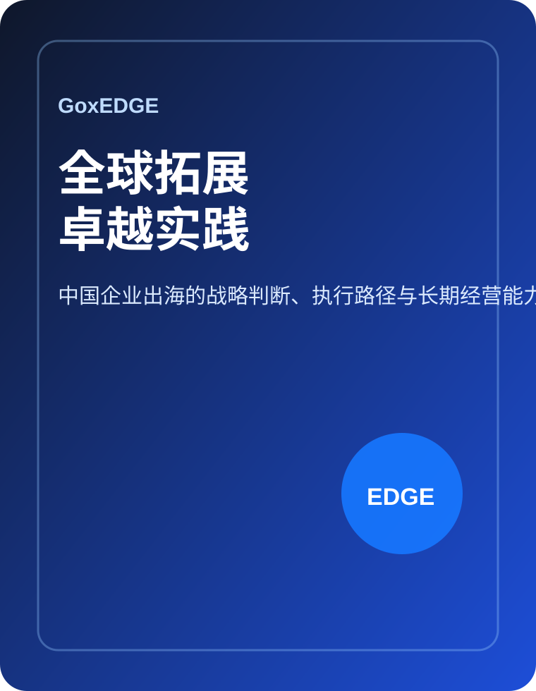

Book Companion
《GoxEDGE 全球拓展卓越实践》
一本帮助中国企业从“出海行动”走向“全球化经营能力”的方法论书。它关注的不是某个单点技巧，而是企业如何在不确定环境下完成判断、定位、执行、赋能、优化与长期经营。
本书核心观点
企业出海不是一次市场进入动作，而是一套跨市场经营能力的建设过程。GoxEDGE 将企业全球拓展拆解为探索、定位、执行、赋能、优化和可持续六个阶段，帮助企业形成更清晰的判断、更稳健的执行和更长期的经营能力。
- 从趋势、动因和战略准备理解全球拓展的必要性。
- 用六阶段方法拆解从判断到执行的全过程。
- 通过工具、案例和复盘机制增强实践可操作性。

封面、出版社、出版时间与 ISBN 信息将在图书定稿后更新。
适合读者
谁适合读这本书？
企业创始人和管理层
正在判断是否出海、先去哪里、如何配置资源。
海外业务负责人
负责市场、品牌、渠道、产品、本地化和执行落地。
专业服务机构
为企业出海提供咨询、语言、市场进入、合规等支持。
研究者与观察者
关注中国企业全球化、产业出海和跨市场经营。
目录结构
暂定结构：从趋势到路径，再到组织支持
第一部分
趋势与战略准备
讨论全球化环境、出海动因、战略准备度与企业是否应该启动全球拓展。
第二部分
六阶段实操路径
系统展开探索、定位、执行、赋能、优化和可持续六个阶段。
第三部分
行动与组织支持体系
讨论组织能力、工具使用、案例场景、行动手册与后续资源。
读者收获
读完之后可以带走什么？
一套方法框架
理解企业全球拓展为什么需要阶段化推进。
一组实操工具
使用准备度自测、市场选择、行动计划和风险清单。
一种复盘视角
把出海项目从短期动作转化为长期能力建设。
下一步：查看 GoxEDGE 模型。
先理解六阶段路径，再进入工具下载和章节导读。